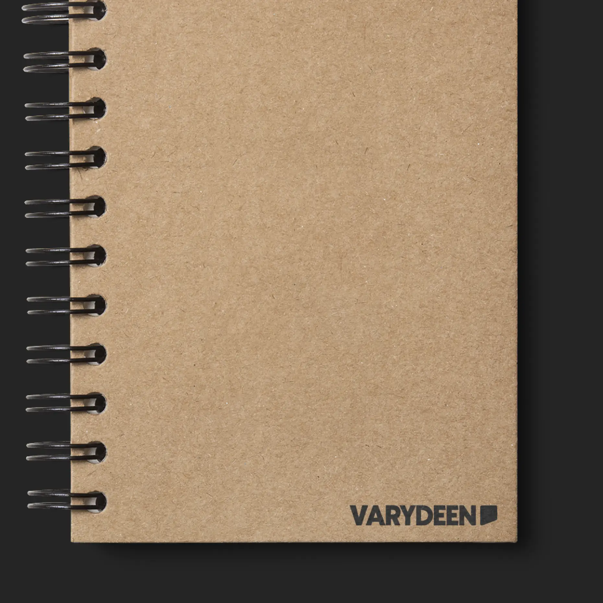
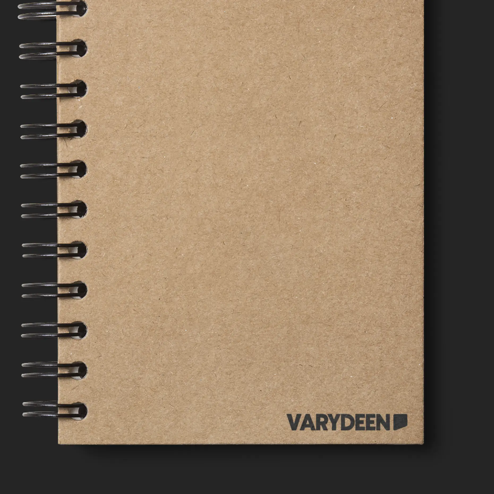

Status
Finished
Type
Logo / CI
Varydeen is a small game studio that is committed to creating immersive and captivating gaming experiences. When designing the logo and CI for Varydeen, the goal was to capture the studio's unique identity and its focus on innovation. The chat-icon inspired logo is meant to incorporate the social elements of gaming and technology.

 
